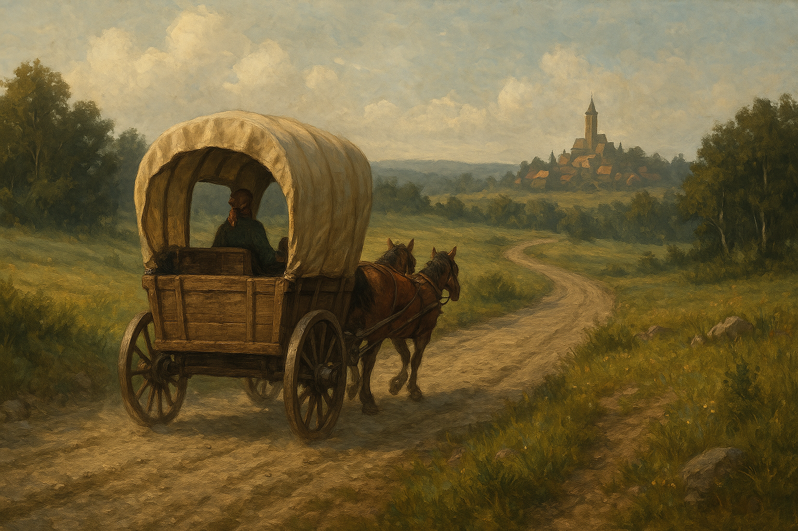

Chapter 3: The Gathering
Gathering of the Chosen


Gathering of the Chosen
15049.03.21
一早，冒險者們便被爵士宅邸客房內的魔法廣播系統喚醒，請大家移動到宴會廳，參與年度集會。冒險者們在各自的座位上簡單用了早點，集會便開始了。
一開始，諾曼爵士先再次介紹了組織的編制，包含各大階級，以及高層及人士分別的個人護衛（同時也提醒大家在集會中禁止使用暴力）。然後他便和大家簡單報告了本年度T.I.D.E.S.組織的變動狀況，包涵伊許頓・懷斯的逝世，組織高層決議讓奇斯・楊升上天賦者的階級。
接著，進到了挑戰方尖碑階級的環節。天賦者中，一位名為蘿拉・費許朋的女子站了起來，表示他要向萊里女士進行挑戰。在萊里點頭接受了蘿拉使用魔法的請求後，蘿拉便伸出他的手，指尖冒出了一股異樣的氣。冒險者們盯著萊里看，發現他的右眼開始滲血，接著，他的右眼珠便被用力地騰空挖出，直接掉到萊里正前方的地板上。蘿拉向諾曼爵士表示，萊里的右眼便是他的信物，而萊里一手捂著空洞的眼窩，一邊默默的點著頭。
諾曼爵士宣告，自此開始，萊里便不再是方尖碑的成員，更不是T.I.D.E.S.的一員了，同時也請萊里步出會場。看著蘿拉慢慢地走上舞台，坐上原本屬於萊里的座椅，冒險者們心中除了詫異外，更有著惋惜與氣憤。不過，在諾曼爵士宣布，被萊里邀請的他們也必須離場時，他們也沒有別的話能說了。集會則繼續進行著，但這已經與冒險者們沒有關係了。
走出爵士的宅邸，僕人引導萊里走向其中一輛馬車，表示這是諾曼爵士賜予萊里的最後一份禮物，讓萊里和冒險者們登上馬車。萊里駕起馬車，準備出發。在冒險者們的詢問下，萊里也和他們說明，他預計帶他們到一個名為「土城」的地方，他在那裡還有屬於自己的一些資源可以使用。不過對阿龍而言，更重要的是，土城，是他的家鄉。
15049.03.21
Early that morning, the adventurers were awakened by the magical broadcasting system inside the guest rooms of the Syr's manor, instructing everyone to move to the banquet hall for the annual gathering. After having a simple breakfast at their assigned seats, the gathering began.
At the start, Syr Norman once again introduced the structure of the organization, including its major ranks and the personal guards assigned to each of the higher-ranking members. He also reminded everyone that violence was forbidden during the gathering. He then gave a brief report on this year's changes within T.I.D.E.S., including the death of Ishton Weiss and the decision by the leadership to promote Keith Young to the rank of Gifted.
Next came the portion for challenging the Obelisk rank. Among the Gifted, a woman named Laura Fishburne stood up and declared that she wished to challenge Miss Riley. After Riley nodded to allow Laura to use magic, Laura stretched out her hand, and a strange energy rose from her fingertips. The adventurers stared at Riley and saw blood begin to seep from her right eye. Then, with violent force, her right eyeball was torn free into the air and dropped directly onto the floor in front of her. Laura informed Syr Norman that Riley's right eye was her token, while Riley covered her empty eye socket with one hand and silently nodded.
Syr Norman declared that from this moment onward, Riley was no longer a member of the Obelisk, nor even a member of T.I.D.E.S., and ordered her to leave the hall. As the adventurers watched Laura slowly walk up onto the stage and sit in the seat that had once belonged to Riley, they felt not only shock, but also regret and anger. But when Syr Norman announced that those invited by Riley would also have to leave, there was nothing the adventurers could say. The gathering continued, but it no longer had anything to do with them.
After leaving the Syr's manor, a servant guided Riley to one of the carriages and said it was the final gift Syr Norman was granting her. Riley and the adventurers boarded the carriage, and Riley took up the reins, preparing to depart. In response to the adventurers' questions, Riley explained that she intended to take them to a place called Mudtown, where she still had some resources of her own available. For Al-lon, however, the more important fact was this: Mudtown was his hometown.